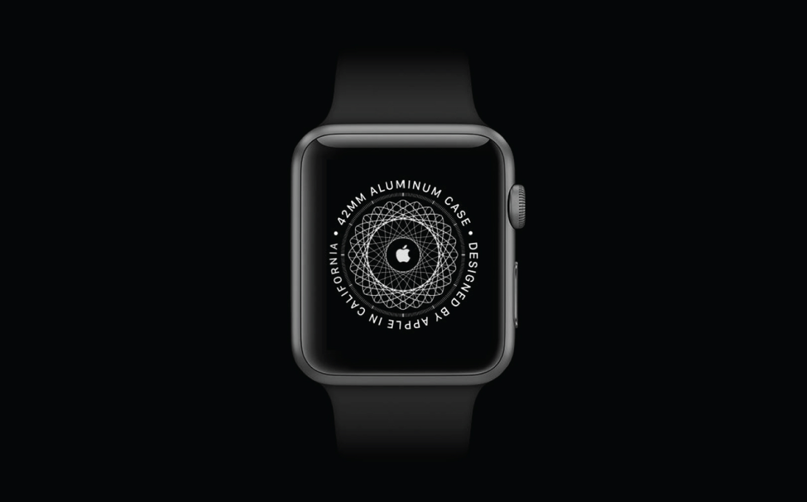
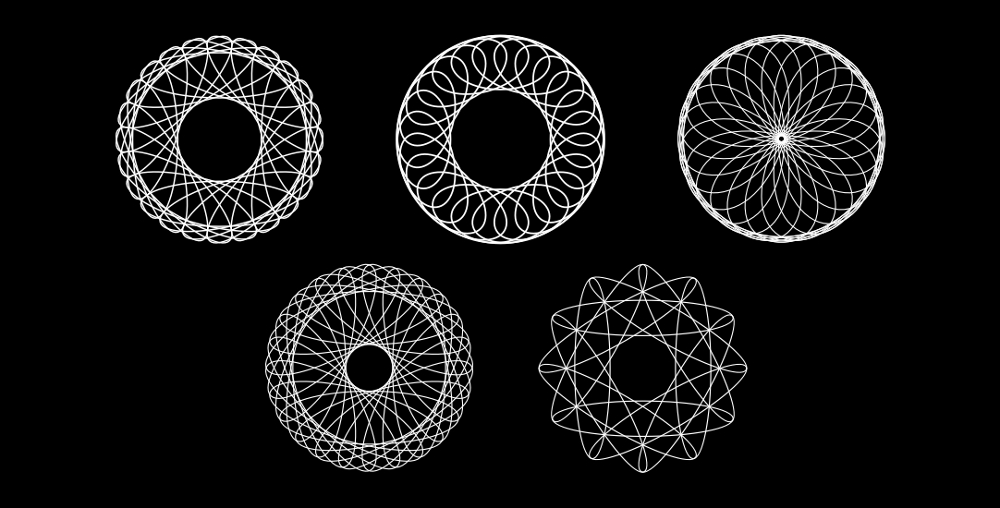
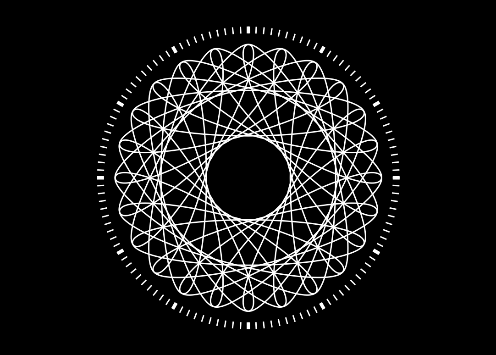

Recreate the Apple Watch's Iconic Pairing Pattern in Vector

Apple Watch itself is so beautiful, but also its pairing screen. I feel that this pattern is too complicated to be made by hand, so it seems that it was made by using code. It turns out that Apple made it based on 24 ovals, each representing 24 hours in a day. Each oval is offset from the center. So we can easily recreate it in code.
I’m using PaperJS - a vector graphics scripting framework - because you can export any final shape or pattern to an SVG file.
Start with an ellipse
Create an ellipse in Sketch sandbox:
var strokeWidth = 2
var ellipse = new Path.Ellipse({
size: [66, 337],
strokeColor: 'black',
strokeWidth: strokeWidth,
position: view.center + [94, 0],
})
The code is simple and self-explanatory, except for the last line where I move the ellipse away from the center x: 94 and y: 0.
This will be necessary later when we make copies of this ellipse and rotate them around the center.
Making multiple ellipse clones
A simple for loop is used to create 24 clones.
At the end of the loop, we need to rotate the ellipse by an angle multiplied by the number of clones and rotate it from the center of the view.
Try yourself: Sketch
var clones = 24
var angle = 360/clones
var strokeWidth = 2
for (var i = 0; i < clones; i++){
var ellipse = new Path.Ellipse({
size: [66, 337],
strokeColor: 'black',
strokeWidth: strokeWidth,
position: view.center + [94, 0],
})
ellipse.rotate(angle * i, view.center)
}
The fun of the code is that you can tweak any number to get fun and interesting results.

Adding dials
For the dials, we need to write a simple function that creates rectangles based on the parameters of the function. We will use this function twice: to create 12 and 24 dials.
Try yourself: Sketch
var clones = 24
var angle = 360/clones
var strokeWidth = 2
for (var i = 0; i < clones; i++){
var ellipse = new Path.Ellipse({
size: [66, 337],
strokeColor: 'black',
strokeWidth: strokeWidth,
position: view.center + [94, 0],
})
ellipse.rotate(angle * i, view.center)
}
function createDials(clones, size){
var angle = 360/clones
var distanceFromCenter = 215
for (var i = 0; i < clones; i++){
var rect = new Path.Rectangle({
size: size,
fillColor: 'black',
center: [view.size.width/2, view.size.height/2 + distanceFromCenter],
})
rect.rotate(angle * i, view.center)
}
}
createDials(24 * 5, [2,10])
createDials(12, [5,10])
In the right corner of the sketch, tap the “Save as SVG” button to open it in any vector editing tool.
